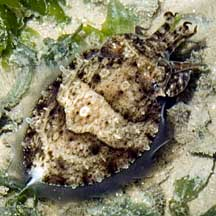
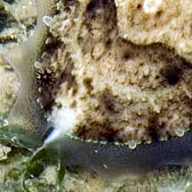
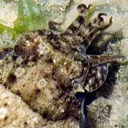
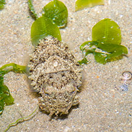

|
|
| cephalopods text index | photo index |
| Phylum Mollusca > Class Cephalopoda > squids and cuttlefishes > Family Sepiidae |
| Curvespine
cuttlefish Sepia recurvirostra Family Sepiidae updated May 2020 Where seen? Chubby cuttlefishes are sometimes common on our Northern shores. Seen among seagrasses, hovering slowly close to the ground. 'Recurvirostra' means 'curved spine' referring the shape of the spine on its cuttlebone, not visible in a living animal. Features: 4-6cm long, grows up to 17cm long and weighs 0.4kg. Squat oval body with short tapered arms. Narrow transparent fins all around the body. There is a pattern of small bumps extending into the fins along the edge where the fins attach to the body. Patterns include mottled bands with circles, to more muted bands. The animal can change the body texture from smooth to spiky.When alarmed, it tucks its arms under its heads and the tips of the middle arms are often held upright. Human uses: The cuttlefish is harvested commercially in Hong Kong and Thailand by traw and net. |
 Changi, Apr 07 |
 Spine sticking out of the back end. |
 |
 Inking. Chek Jawa, May 05 |
 Only slightly bigger than a blade of seagrass. Chek Jawa, Sep 03 |
 Changi, Apr 05 |
| Curvespine cuttlefishes on Singapore shores |
On wildsingapore
flickr
|
| Other sightings on Singapore shores |
| |
| Acknowledgement Grateful thanks to Tay Ywee Chieh for identifying this cuttlefish. Links
|